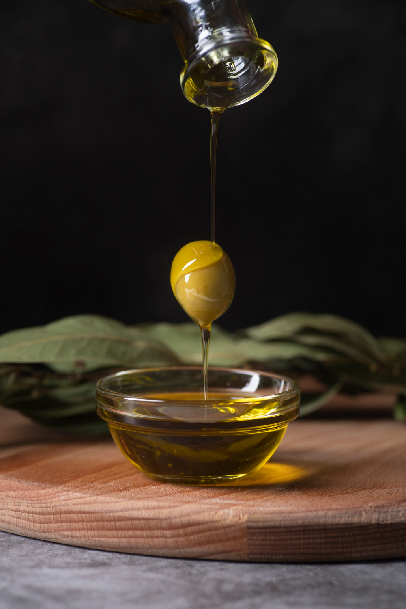

Les anciens aimaient les grands arbres car ils pensaient que plus l’arbre était important, plus grande serait la quantité de fruits menée au moulin. Ils laissaient donc l’olivier grandir dans toutes les directions. Ils avaient quand même remarqués que la fructification se faisait principalement sur les parties retombantes des rameaux (penduliers). La taille de l’olivier est une opération importante, voire essentielle dans la culture de l’olivier. La taille a pour but de former, de favoriser la fructification ou de permettre la reprise d’un olivier laissé à l’abandon. Comment tailler un olivier ?
Comme tous les arbres fruitiers, l’olivier est régulièrement taillé. Il peut être taillé toute l’année, mais les mois de mars, avril et mai sont les mois de la taille, entre les risques de gel et la floraison. L’olivier est un arbre qui nécessite une taille annuelle. Il faut discerner les tailles favorisant la production de fruits et la taille purement esthétique. Les tailles concernant la production comprennent la taille de formation, la taille de fructification et la taille de reprise. La taille de formation sur le jeune arbre, a pour but de former un monotronc en éliminant les branches afin de renforcer la ligne centrale. Quand le jeune olivier atteint 1.50m, il convient de lui donner une forme équilibrée et rationnelle pour son exploitation. La taille de fructification est pour sa part limitée à l’entretien et à l’harmonisation. Elle est annuelle et ne doit pas être trop sévère sinon elle irait à l’encontre de la régulation de la production de l’olivier mais les tailles successives améliorent les récoltes. La taille de reprise ou de régénération, généralement sévère, se pratique pour rénover un arbre devenu improductif par vieillissement ou négligence. On ramène donc la végétation à un volume plus faible et plus ramassé près du tronc. Tous les cinq à dix ans, un élagage est nécessaire afin d’éviter que l’arbre ne prenne trop de hauteur. Il existe une méthode communément appelée la taille dite » du midi de la France » qui favorise la production importante d’olives sans tailler trop souvent et qui consiste à évider le centre de l’arbre afin de favoriser l’insolation des fruits. Mais attention, le soleil inflige souvent de graves brûlures à l’écorce de l’olivier. Un dicton Provençale dit : « la feuille au soleil, l’écorce à l’ombre« .